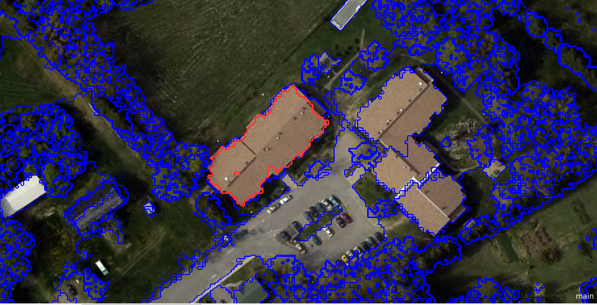

7 Week 7 Classification II
In this week, the content looks like a continuation of last week’s content about remote sensing image classification. Looking back to last week, our group was going to learn pixel based classification, that is, pixels are divided into different categories, and this week we learned two new classification methods. In addition, we have studied several methods for evaluating the accuracy of classification results. In order to improve the accuracy and precision of classification, we also learned spatial cross validation. To better understand the relevant knowledge, I also looked up the relevant applications.
7.1 Summary
The summary part of learning diary in this week has been divided by four parts, including new classification methods (object-based image analysis and sub pixel analysis), accuracy assessment, cross validation, and summary of practical.
7.1.1 New classification methods
Object-based image analysis (OBIA)
OBIA is commonly to see when doing remote sensing analysis, especially classification. Simple Linear Iterative Clustering (SLIC) will be doing first usually to generate “blocks”, which by giving some regular points in the acquired image, and according to the distance or similarity between each pixel in the image and these points, or other characteristics, small object is generated based on each regular point as centroid, and then remove these centroids. Comparing to single pixel, each segmentation (or object) we get after object-based image analysis has more information about the spectral information and spatial information (Blaschke 2010). Figure 1 shows the objects created when doing OBIA classification.

Sub pixel analysis
Sometimes the resolution of remote sensing image we acquire is not high enough, or the object we want to explore is too small to take up most part of the pixel, so a pixel may contain more than one type of object. In this case, sub pixel analysis (similar as Spectral Mixture Analysis or Linear spectral unmixing) can be tried to classify images more accurately. Mainly used to determine the proportion or abundance of landcover per pixel. According to the following formula, we can calculate the fractions of different types of objects in this pixel, which can help us make decision on which category should this pixel belongs to or how to divide this pixel.

7.1.2 Accuracy assessment
After classification, we need to assess the accuracy of the classification results, and usually in remote sensing, we use confusion matrix and we consider that the true positive and true negative part of the classification results show where the model is correct, and false positive and false negative parts show where the model is incorrect.
- Producer accuracy (PA), user’s accuracy (UA), and overall accuracy (OA)
We can calculate producer accuracy (PA), user’s accuracy (UA), and overall accuracy (OA) based on the values in the confusion matrix and the formulas below. Producer accuracy represents how well the producer of map classified the image, while user’s accuracy refers how well the users can use the classified map.
\[ PA=\frac{True positive}{True positive + False negative} \]
\[ UA=\frac{True positive}{True positive + False positive}-False positive \]
\[ OA=\frac{True positive+True negative}{True positive +True negative+ False positive + False negative} \]
- Kappa coefficient
Another commonly used accuracy assessment is Kappa coefficient, which can express the accuracy of image classification compared to chance results. The range of Kappa is from 0 to 1. However, there are two issues of Kappa coefficient, one is no unified standard for evaluating the value of Kappa so far, the other is different overall accuracy may correspond to different value ranges of Kappa, which may lead to different results of the same analysis conducted by different people.
- F1 score
Since it is hard to get perfect result with both high UA and PA, combine them into one measurement, that is, F1 score. The range of F1 score is from 0 to 1, and 1 means the perfect performance. According to the following formula, it is clear that there is no True negative in it. In addition, it might not be suitable for the data is unbalanced with much more negatives results.
\[ F1 =\frac{Truepositive}{True positive + \frac{False positive+False negative}{2}} \]
- Receiver Operating Characteristic Curve
Receiver operating characteristic curve (ROC curve) generated based on true positive rate and false positive rate according to the following formulas. Then, we need to calculate the area user the ROC curve, which is the accuracy. This method requires a combination of train and test split or cross validation.
\[ Truepositiverate=\frac{True positive}{True positive + False negative} \]
\[ Falsepositive rate=\frac{False positive}{False positive + True negative} \]
7.1.3 Spatial cross validation
When doing cross validation based on spatial data, most of time, we need to consider the spatial dependence issue. There should not be spatial dependence between training and test sets in each iteration. According to the relevant content that we learnt in CASA0005 last term, we can use Moran’s I to detect whether there is spatial autocorrelation between training set and testing set.
What is different from cross validation is that we do spatially partition the folded data from cross validation and do clustering analysis to get the final training and testing sets in each fold to avoid the data points in training set and testing set are too close, which can also avoid to get the overfitting classification result.
- Additional content: In the lecture, there is an application of spatial cross validation combined with Support Vector Machine (SVM) to classify the image. C and gamma are two important parameters in this method, which C is for changing the slope of classification line between two classes, and gamma is for controlling the influence of a training point in that image. We can get C and gamma after each run in each fold based on different split, and then use the C and gamma to classify the image.
- Iteration for doing OBIA is needed, and the regular points move 4 to 10 times is better in each iteration.
- It is hard to evaluate the accuracy of the fraction results of sub pixel analysis, and the results might not always good, which need to be considered when choosing this method. In the practical part, there are two solutions introduced for this issue.
- No perfect answer for how to classify the image, sometimes we can make decision based on the classification is more important to the producer or the user, thus reconciling PA and OA.
- Errors of omission has similar function as producer’s accuracy, and errors of commission has similar function as user’s accuracy.
7.1.4 Summary of practical
In this week, the practical can be divided into two main parts, including data pre-processing and two new classification methods, one is based on sub pixel analysis, the other is based on object-based image analysis. Main workflow of practical in this week shows in the following Figure 2.
- Workflow
In the first part of the practical, we did similar data pre-processing as the methods we used in the previous weeks. One interesting thing during the process of remove the pixels covered by clouds or with cloud shadow by using a cloud mask function we defined. However, from the result (Figure 3), the deleted pixels are not affected by the cloud, it may be that the sand or buildings are misjudged to be clouds due to high reflectance. Since visual interpretation found that there was no significant cloud cover within the study area, this step of cloud removal was omitted from data pre-processing the image in order to preserve the complete image.
- Sub pixel analysis
In the sub pixel analysis section, the process mentioned in the class is reviewed, including first creating different types of land-use points or manually setting some numerical values, then extracting and averaging different categories of points, and calculating the fraction corresponding to each land-use type in each pixel according to the formula mentioned above. After obtaining the proportion of different land use types in each pixel, the category that accounts for more than 50% of each pixel is selected as the land use type of this pixel. The code of reclassifying shows in the following code chunk. Then we get the classification result of Figure 4 below, where the gray area represents urban area, blue area represents water, and the green parts represent the vegetation.
// reclassify
var reclassified_urban = fractions_constrained.expression('b(0) >.5 ? 1 : 0');
var reclassified_vegetation = fractions_constrained.expression('b(1) >.5 ? 2 : 0');
var reclassified_water = fractions_constrained.expression('b(3) >.5 ? 3 : 0');
// add all images together and cliped by the boundary of study area
var reclassified_all = reclassified_urban.add(reclassified_urban)
.add(reclassified_bare_vegetation)
.add(reclassified_water)
.clip(Daressalaam);As can be seen from Figure 4, this classification result is not accurate. Many central areas in the study area were classified into water, but after the comparison with the remote sensing image I selected, this classification result is obviously wrong, that’s might because of the feature points I selected are not accurate enough. Besides that, most of the peripheral study area was classified into vegetation, and the density and texture of the vegetation distribution should not be uniform, there should be some gathered forests and vegetation scattered between buildings. Therefore, this part of the classification is inaccurate, which may be due to the lower resolution of the image, and higher resolution data should be tried.
- Object-based image analysis
The main purpose of this part is to try classify the image based on object-based image analysis, not in pixel scale, so first generate objects from pixels in the image, and then use appropriate classification methods to classify objects, for instance, K-means classification. Therefore, I first generated a spectral gradient based on the difference in spectral values, then clustered those objects based on Simple non-iterative clustering (SNIC), and check the rationality of clustering results based on the distribution of NDVI of each cluster. In this practical case, I used the CART method for image classification, which is shown in Figure 5 below. The gray area is the urban area, the green area is vegetation, and the blue area is water.
It can be seen from Figure 5 that the urban area is mainly distributed in the center of the study area, and there are also building agglomerations where it is off-center area, while the vegetation is mainly distributed in the off-center area of the study area. However, compared with the results of visual interpretation of images, in addition to the basic accuracy of the identification of water bodies, the accuracy of classification of other land use types is still relatively low. I think it may be due to the large size of the objects I set, and the mixed distribution of local land use types, so the classification results are not very accurate. In addition, it may be that the land use type I set is inadequate, and I should take into account the local land use characteristics, add consideration to bare land, and refine the classification of vegetation, which is divided into grassland and forest. At the same time, perhaps due to the low robustness of CART, switching to random forest or other ensemble learning may help improve classification accuracy.
For Figure 4 and Figure 5 above, the difference between the two classification results can be clearly contrasted, because the smallest unit scales of the two classification methods are different, so I think the biggest advantage of sub pixel analysis classification is that it can identify mixed land use types, for example, the urban areas (buildings) distributed in large areas of vegetation in Figure 4. The various types of land use in Figure 5 are composed of small irregular clusters. For different data and research questions, the applicable classification methods would also be different, so many factors, the characteristics and shortcomings of different classification methods should be considered when doing classification.
However, the above evaluation and comparison of classification results based on sub pixel analysis and object-based image analysis are compared with the visual interpretation results of images, and cannot be used as quantitative, scientific and accurate evaluation results. Therefore, this is also a deficiency of this week’s practical section, which does not apply any of the methods learned in the class this week to assess the accuracy of the classification results.
- QA band is for removing cloud pixels and avoid misclassify.
- Questions
So far no question related to the content in this week.
7.2 Application
In this week’s Application section, I added two papers on sub-pixel-level classification and object-based image analysis classification, respectively. In addition to summarizing the content of each literature, the data and methods used in the study and other aspects are discussed as well.
- Application of sub pixel analysis classification
- Summary
Deng and Zhu (2020) conducted an urban transition study on a county in southern New York state. According to the Landsat data they obtained from 2000 to 2014, the method combined with Continuous Sub-pixel Monitoring (CSM) improves the accuracy of urban impervious layer mapping based on sub pixel level, and random forest classification continuously monitors urban transitions in time and space (Deng and Zhu 2020). Figure 5 below shows how sensitive this method is for monitoring urban transitions. For example, the green circles marked in Figures 5 A and B were a complete vacant lot in 2006, while Figures 5 C and D show that in 2014 the the vacant lot in the same location was divided into three parts and developed to varying degrees. This change is not only very clear on the NAIP orthophotos, but the difference can also be clearly seen by comparing A and C. According to the results obtained in this study, this method can achieve continuous monitoring of urban transition in areas undergoing urbanization with relatively high accuracy.
- Discussion
According to this research, I think the data they chose is appropriate. First of all, because the Landsat series of satellites has been used for a long time, and relatively early data can be obtained. Secondly, it is easier to obtain long-term, continuous data as open source satellite data (Deng and Zhu 2020). In addition, I deem that it is reasonable for the authors to choose to analyze images based on sub pixel levels. That is because the resolution of the Landsat series images used in the study is about 30 to 60 meters (USGS, n.d.), it will cause serious mixing pixel problems in urbanization areas with high population and facility density (Deng and Zhu 2020). Therefore, sub pixel level is acceptable if they need to accurately monitor urban transitions. In addition, the Landsat imagery was classified based on the ensemble learning method of random forest, which makes the classification results relatively robust. However, due to the needs for long-term, frequent and accurate monitoring, the demand for data is huge, and with the extension of monitoring time, there may be big problems in data storage.
- Application of OBIA classification
- Summary
Phiri et al. (2018) classified the pansharpened images of Landsat 8 and standard OLI 8 images after atmospheric and topological corrections based on Object-based image analysis and random forest classification to evaluate the impact of different data pre-processing methods on land cover classification accuracy by comparing different Z statistics. Phiri et al. (2018) chose the random forest-based classification method because after trying 5 different machine learning classification methods, including CART, they found that the results of the random forest-based classification method were the most accurate. It is clear from the Figure 6 E that it is more accurate for the classification of secondary forests in the northeast direction in the image, and the classification of dry agriculture in the middle of the image is significantly better. Therefore, they concluded that the accuracy of image classification is not only affected by the resolution of the original image, but also has an obvious relationship with the method of data pre-processing and classification of images in this case.
- Discussion
This study can be contrasted with the third part of practical above. When doing practical, I thought one of the reasons why classification is not very accurate is that the CART classification without high robust, and could be replaced by random forest classification. I think the reason why the random forest classification is more appropriate is that this method uses the least variables, and its final result is based on multiple decision trees, which can avoid the occurrence of overfitting, and the robustness of the results and the accuracy of classification are relatively high (Phiri et al. 2018). The authors chose the OBIA classification method might because it can combine many aspects of information, such as texture, size, shape, and other aspects (Phiri and Morgenroth 2017), so it is more suitable for studying the complex land cover type study area. However, OBIA is more suitable for high-resolution remote sensing images, although there are also many studies that chose to classify image with relatively low resolution like Landsat images based on OBIA classification (Phiri and Morgenroth 2017). It is not necessarily the most appropriate method, because it may be difficult to identify information such as texture when the resolution is not high, and the advantages of OBIA cannot be fully played, which is not necessary to carry out relative to pixel-level classificationMore complex object-based classification.
7.3 Reflection
What is interesting?
I think what’s more interesting about this week are the two new classifications: sub pixel classification and OBIA classification. They are not based on traditional pixel classification methods, but break the boundaries of pixels to segment remote sensing images. Another interesting thing is, in the practical part, it is quite obviously that the classification results of sub pixel analysis and the classification based on OBIA have several differences. However, I haven’t figured out why the area in the middle of the image is classified as water when based on sub pixel classification, because I did not select feature points in the water category nearby, and the color of the features corresponding to the water feature points selected is significantly different. Therefore, to figure out this question, I may learn more about the fundamentals and applications of the sub pixel classification after class in future.
What is useful in the future?
For the classification methods that have been studied a lot by previous scholars, there should not be a completely useless situation for those classification methods and different classification levels, but it may not be suitable for all cases, resulting in poor classification accuracy. For example, based on what has been learned and learned this week, OBIA may be better suited to classify higher-resolution imagery, which can better exploit its advantages, such as extracting informal buildings and formal buildings, distinguishing forests from grasslands, and so on. In addition, random forest and other ensemble learning methods may be the classification methods I often use when performing image classification, because they can help me improve the accuracy of classification to a certain extent and reduce the occurrence of overfitting.
What can be instead?
I think that the easier alternative in the content of this week is the methods of assessing the accuracy of classification results, because there are many evaluation methods, as long as we choose one of them to calculate the classification accuracy of different categories and facilitate comparison. For example, Phiri et al. (2018) uses Z statistics to characterize the accuracy of the classification, but they can also obtain producer’s accuracy, user’s accuracy, and overall accuracy through the confusion matrix to assess the method, compare differences, and analyze the results.